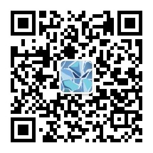

时间从来不回答
这是「折光观察者」项目所属微信公众号「时间从来不回答」的用户欢迎页面。
向初次使用的用户提供指导文档。
文档内容施工中
简介
鉴于微信公众号平台存在不透明的监管机制。用户往往无从得知自己关心的文章何时、因何被删。
我们提供一项免费观察服务：
- 当你认为某篇文章可能敏感时，将该文链接发送给公众号「时间从来不回答」。
- bot会自动对链接进行定时观察，当文章链接失效时，发送邮件通知你，并将文章备份发送给你。
初次使用
- 关注公众号: 搜索微信公众号「时间从来不回答」并添加
- 绑定邮箱: 邮箱用于接收观察结果及文章备份文件，直接向公众号发送自己的邮箱地址即可
- 发送观察目标: 在文章右上角菜单键中找到[复制链接]选项，将复制的链接发送给公众号。收到确切回复即代表开始观察。
进阶
- help: 直接向公众号发送「help」命令可以查看基本操作介绍。
- status: 直接向公众号发送「status」命令可以查看邮箱绑定状态。
- list: 直接向公众号发送「list」命令可以查看自己的现有观察目标。
- 换绑邮箱: 直接向公众号发送新的邮箱地址，会解除对原邮箱的绑定，并绑定新邮箱。
Q & A
- 最长观察时间？
通常情况下，会持续观察直到文章失效。但一篇文章的最长观察时间是30天。30天后自动结束观察并发送备份。
- 我的隐私?
你的微信号是脱敏的。我们后台收到的消息已被微信服务器处理过，用户ID以类似这样的形式呈现：ouwzNwvhpmyUVA8yGWtc0K22yHks
因此我们无从得知你的身份。
但是观察目标（网址）是明文传输的。亦有可能被用于后续的数据分析。所以你应该将观察目标视为公开信息，不要发送不合适的内容。
- 为什么是微信公众号？还是个订阅号？
微信有远强于所有其他平台的权限管理规则。所以我们无法使用微信个人号为你提供服务。而公众号的诸多类型中，只有「个人订阅号」不需要进行企业资质认证。
作为一个非营利性的个人项目，我们没有打算在这上面耗费太多成本。
- 文章备份会是什么样的？
目前，暂时，会把微信公众号文章备份为docx文档。其中的图片大小和文字格式都以一种非常单纯的方式呈现，给用户留有自行编辑的空间。
- 更多功能？
本服务代码通过 GPL-3.0 协议完全开源在「折光观察者」 Github 项目中。
如果想要反馈 bug 或申请更多功能，请到 issue 区提交新 issue。
如果想参与开发，欢迎认领 issue 、提交 PR。
- 运行这套服务的开销？
65 RMB/月。目前我们租用了一个便宜的 VPS 来运行服务。后续可能会视情况升级或降级。
如果你喜欢这个服务，希望它长期运行，请考虑捐赠！
公众号二维码

欢迎关注！
想请我喝茶？
支付宝捐赠链接
Fork me on Github